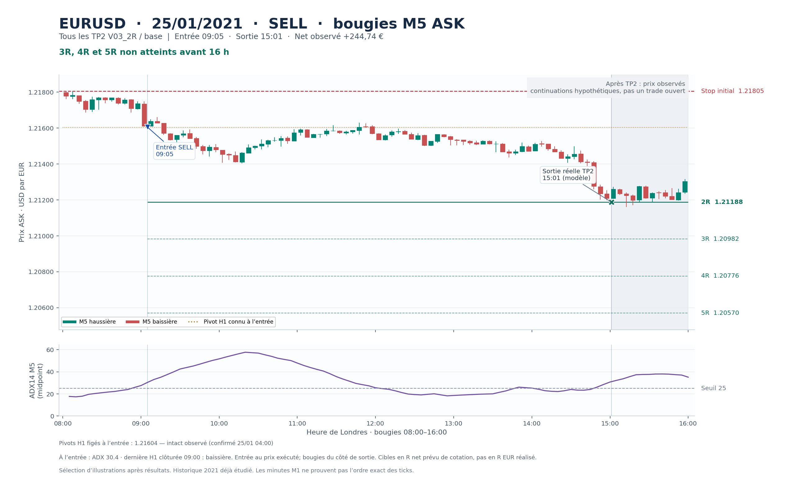
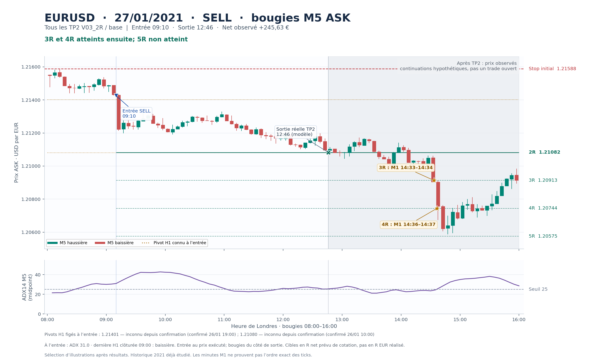
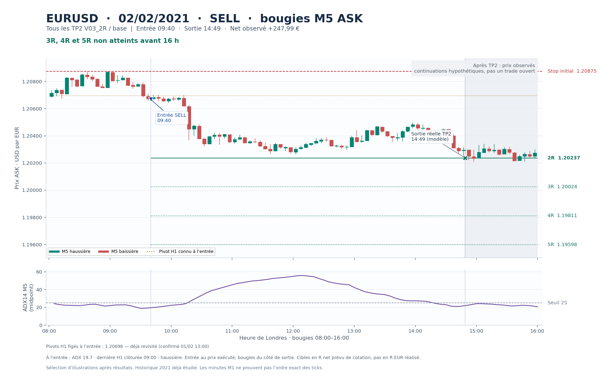
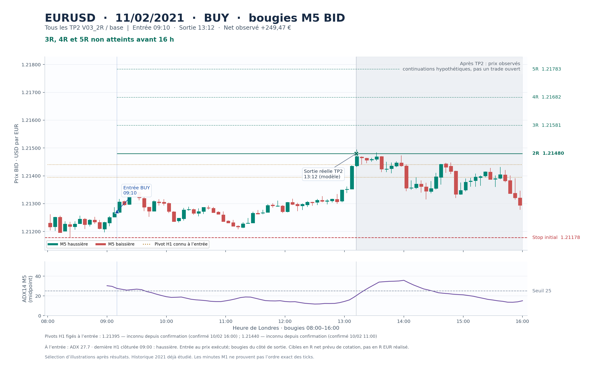
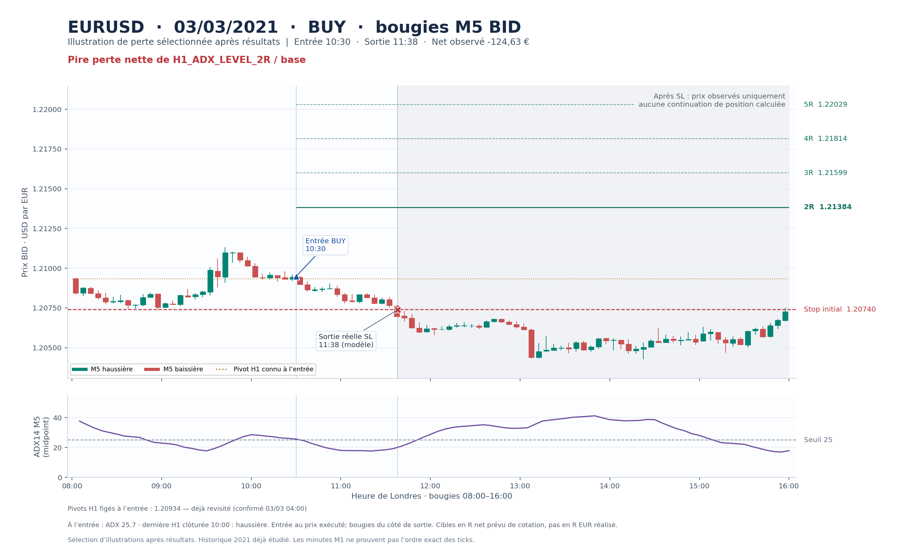

EURUSD · données 2021 · lecture descriptive
Quatre sorties à 2R, et une perte après filtre
Parmi les quatre TP2 de V03_2R au coût standard, le short du 27 janvier atteint ensuite 3R puis 4R avant 16 h. Les trois autres n’atteignent pas 3R; aucun des quatre n’atteint 5R.
Tous les quatre TP2 sont montrés. La cinquième image est la pire perte nette de H1_ADX_LEVEL_2R au coût standard. Ce choix d’illustrations est fait après résultats; il ne sélectionne ni stratégie ni filtre. Les continuations hypothétiques ne sont pas des gains réellement encaissés ni un portefeuille additionnable.
25/01/2021 09:05 · SELL
3R, 4R et 5R non atteints avant 16 h · Net réellement clôturé : 244,74 €.

PNGSVG vectoriel
27/01/2021 09:10 · SELL
3R et 4R atteints ensuite; 5R non atteint · Net réellement clôturé : 245,63 €.

PNGSVG vectoriel
02/02/2021 09:40 · SELL
3R, 4R et 5R non atteints avant 16 h · Net réellement clôturé : 247,99 €.

PNGSVG vectoriel
11/02/2021 09:10 · BUY
3R, 4R et 5R non atteints avant 16 h · Net réellement clôturé : 249,47 €.

PNGSVG vectoriel
03/03/2021 10:30 · BUY
Pire perte nette de H1_ADX_LEVEL_2R / base · Net réellement clôturé : -124,63 €.

PNGSVG vectoriel
Conventions de lecture
- Chandeliers réels M5 de 08 h à 16 h, heure de Londres : BID pour un achat, ASK pour une vente, soit le côté utilisé pour sortir. L’entrée reste le prix exécuté, avec spread et slippage du modèle.
- ADX14 calculé sur les M5 midpoint clôturées, avec remise à zéro après toute M5 incomplète; seuil 25 dessiné. L’ADX indique une intensité, pas une direction.
- Au maximum trois pivots opposés H1, confirmés et connus avant l’entrée, sont dessinés. Leur statut depuis confirmation est évalué et figé à l’entrée. Aucun pivot confirmé plus tard n’est ajouté.
- La zone grisée commence après la clôture réelle du modèle. Les étoiles 3R/4R viennent exclusivement des résultats de continuation déjà produits; elles représentent des intervalles M1, pas des instants de fill au tick.
- Les cibles sont celles du R net prévu en devise de cotation; ce R n’est pas exactement le R monétaire réalisé en euros. Les niveaux supérieurs sur l’exemple perdant sont seulement des repères géométriques, sans nouvelle simulation.
- Aucune EMA20 H1 inventée : sa faisabilité était nulle aux entrées avec la politique de données retenue. Ces images n’établissent aucune rentabilité future ni réussite FTMO.
Provenance et cas sélectionnés · Empreintes des fichiers